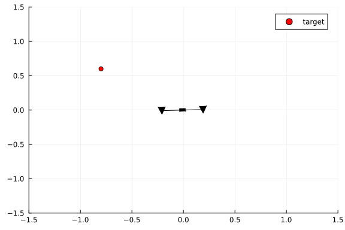

This example was automatically generated from a Jupyter notebook in the RxInferExamples.jl repository.
We welcome and encourage contributions! You can help by:
- Improving this example
- Creating new examples
- Reporting issues or bugs
- Suggesting enhancements
Visit our GitHub repository to get started. Together we can make RxInfer.jl even better! 💪
Drone Dynamics
using RxInfer, LinearAlgebraDefining structures
"""
Environment(; gravitational_constant::Float64 = 9.81)
This structure contains the properties of the environment.
"""
Base.@kwdef struct Environment
gravitational_constant::Float64 = 9.81
end
get_gravity(env::Environment) = env.gravitational_constantget_gravity (generic function with 1 method)"""
Drone(mass, inertia, radius, force_limit)
This structure contains the properties of the drone.
"""
Base.@kwdef struct Drone
mass::Float64
inertia::Float64
radius::Float64
force_limit::Float64
end
get_mass(drone::Drone) = drone.mass
get_properties(drone::Drone) = (drone.mass, drone.inertia, drone.radius, drone.force_limit)get_properties (generic function with 1 method)"""
State(x, y, vx, vy, 𝜃, 𝜔)
This structure contains the state of the drone. It contains the position, velocity, and orientation of the drone.
"""
struct State
x::Float64
y::Float64
vx::Float64
vy::Float64
𝜃::Float64
𝜔::Float64
end
get_state(state::State) = (state.x, state.y, state.vx, state.vy, state.𝜃, state.𝜔)get_state (generic function with 1 method)Model specification
"""
state_transition(state, actions, drone, environment, dt)
This function computes the next state of the drone given the current state, the actions, the drone properties and the environment properties.
"""
function state_transition(state, actions, drone::Drone, environment::Environment, dt)
# extract drone properties
m, I, r, limit = get_properties(drone)
# extract environment properties
g = get_gravity(environment)
# extract feasible actions
Fl, Fr = clamp.(actions, 0, limit)
# extract state properties
x, y, vx, vy, θ, ω = state
# compute forces and torques
Fg = m * g
Fy = (Fl + Fr) * cos(θ) - Fg
Fx = (Fl + Fr) * sin(θ)
𝜏 = (Fl - Fr) * r
# compute movements
ax = Fx / m
ay = Fy / m
vx_new = vx + ax * dt
# vy_new = vx + ay * dt # old version
vy_new = vy + ay * dt # new version
x_new = x + vx * dt + ax * dt^2 / 2
y_new = y + vy * dt + ay * dt^2 / 2
# compute rotations
α = 𝜏 / I
ω_new = ω + α * dt
θ_new = θ + ω * dt + α * dt^2 / 2
return [x_new, y_new, vx_new, vy_new, θ_new, ω_new]
endMain.anonymous.state_transition@model function drone_model(drone, environment, initial_state, goal, horizon, dt)
# extract environment properties
g = get_gravity(environment)
# extract drone properties
m = get_mass(drone)
# initial state prior
s[1] ~ MvNormal(mean = initial_state, covariance = 1e-5 * I)
for i in 1:horizon
# prior on actions (mean compensates for gravity)
u[i] ~ MvNormal(μ = [m * g / 2, m * g / 2], Σ = diageye(2))
# state transition
s[i + 1] ~ MvNormal(
μ = state_transition(s[i], u[i], drone, environment, dt),
Σ = 1e-10 * I
)
end
s[end] ~ MvNormal(mean = goal, covariance = 1e-5 * diageye(6))
endProbabilistic inference
@meta function drone_meta()
# approximate the state transition function using the Unscented transform
state_transition() -> Unscented()
enddrone_meta (generic function with 1 method)function move_to_target(drone::Drone, env::Environment, start::State, target, horizon, dt)
results = infer(
model = drone_model(
drone = drone,
environment = env,
horizon = horizon,
dt = dt
),
data = (
initial_state = collect(get_state(start)),
goal = [target[1], target[2], 0, 0, 0, 0],
),
meta = drone_meta(),
returnvars = (s = KeepLast(), u = KeepLast())
)
return results
endmove_to_target (generic function with 1 method)drone = Drone(
mass = 1,
inertia = 1,
radius = 0.2,
force_limit = 15.0
)
env = Environment()
start = State(0.0, 0.0, 0.0, 0.0, 0.0, 0.0)
target = [-0.8, 0.6]
results = move_to_target(drone, env, start, target, 40, 0.05)Inference results:
Posteriors | available for (s, u)Plotting
using Plotsfunction plot_drone!(p, drone::Drone, state::State; color = :black)
x, y, x_a, y_a, θ, ω = get_state(state)
_, _, radius, _ = get_properties(drone)
dx = radius * cos(θ)
dy = radius * sin(θ)
drone_position = [ x ], [ y ]
drone_engines = [ x - dx, x + dx ], [ y + dy, y - dy ]
drone_coordinates = [ x - dx, x, x + dx ], [ y + dy, y, y - dy ]
rotation_matrix = [ cos(-θ) -sin(-θ); sin(-θ) cos(-θ) ]
engine_shape = [ -1 0 1; 1 -1 1 ]
drone_shape = [ -2 -2 2 2 ; -1 1 1 -1 ]
engine_shape = rotation_matrix * engine_shape
drone_shape = rotation_matrix * drone_shape
engine_marker = Shape(engine_shape[1, :], engine_shape[2, :])
drone_marker = Shape(drone_shape[1, :], drone_shape[2, :])
scatter!(p, drone_position[1], drone_position[2]; color = color, label = false, marker = drone_marker)
scatter!(p, drone_engines[1], drone_engines[2]; color = color, label = false, marker = engine_marker, ms = 10)
plot!(p, drone_coordinates; color = color, label = false)
return p
endplot_drone! (generic function with 1 method)function animate_drone(drone::Drone, target, results::InferenceResult)
states = hcat(map(p -> mean(p), results.posteriors[:s])...)
animation = @animate for k in 1:size(states,2)
# plot target
p = scatter([target[1]], [target[2]], label = "target"; color = :red)
# plot drone
plot_drone!(p, drone, State(states[:, k]...))
xlims!(-1.5, 1.5)
ylims!(-1.5, 1.5)
end
gif(animation, "drone.gif", show_msg = false)
nothing
endanimate_drone (generic function with 1 method)animate_drone(drone, target, results)
let
inferred_angle_mean = map(p -> mean(p)[5], results.posteriors[:s])
inferred_angle_std = map(p -> std(p)[5], results.posteriors[:s])
plot(inferred_angle_mean; ribbon = inferred_angle_std, fillalpha = 0.2, label = "inferred angle", size=(600,300))
end
let
inferred_forces_mean = hcat(map(p -> mean(p), results.posteriors[:u])...)'
inferred_forces_std = hcat(map(p -> sqrt.(var(p)), results.posteriors[:u])...)'
plot(inferred_forces_mean[:,1]; ribbon = inferred_forces_std[:,1], fillalpha = 0.2, label = "Fl", size=(600,300))
plot!(inferred_forces_mean[:,2]; ribbon = inferred_forces_std[:,2], fillalpha = 0.2, label = "Fr", size=(600,300))
hline!([get_mass(drone) * get_gravity(env) / 2], label = "Fg/2")
end
This example was automatically generated from a Jupyter notebook in the RxInferExamples.jl repository.
We welcome and encourage contributions! You can help by:
- Improving this example
- Creating new examples
- Reporting issues or bugs
- Suggesting enhancements
Visit our GitHub repository to get started. Together we can make RxInfer.jl even better! 💪